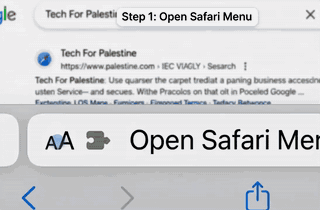

Two taps in Safari and you're protected on every site.
It's in the bottom-left of the address bar on this page.
Choose Manage Extensions, then flip the switch.

You can close this tab and browse normally.
Free, open source, and built for Palestine.
techforpalestine.org